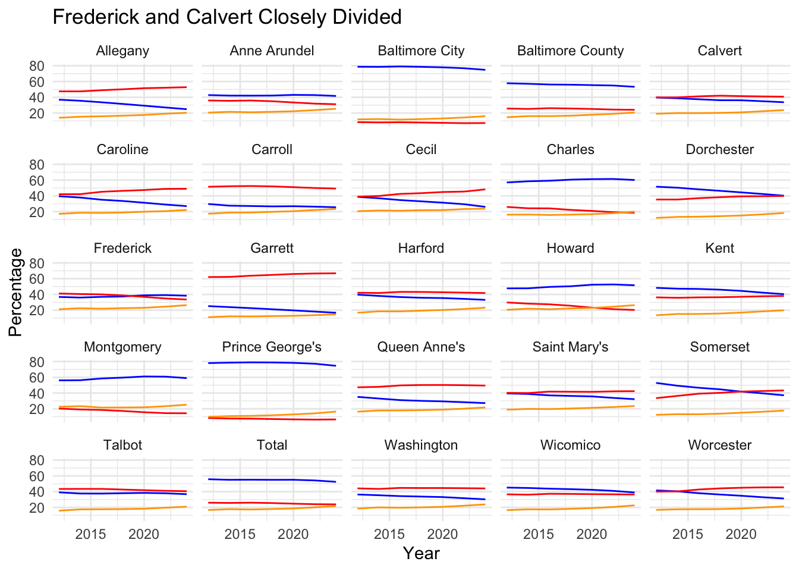

library(tidyverse)
library(readxl)
library(janitor)Converting County Totals
voters12 <- read_csv("voters12.csv")
voters14 <- read_excel("PrecinctRegisterCounts_ByCounty_GG14.xls") |> mutate(year=2014) |> clean_names() |> rename(unaf = una)
voters16 <- read_excel("PG16_Eligible_Active_Voters_by_County.xlsx") |> mutate(year=2016) |> clean_names() |> rename(unaf = una)
voters18 <- read_excel("GG18_Eligible_Active_Voters_by_County.xlsx") |> mutate(year=2018) |> clean_names() |> rename(unaf = una)
voters20 <- read_excel("Eligible Active Voters by County - PG20.xlsx") |> mutate(year=2020) |> clean_names() |> rename(unaf = una) |> mutate(oth = bar + wcp + oth) |> select(-bar, -wcp)
voters22 <- read_excel("Eligible Active Voters by County - GG22.xlsx") |> mutate(year=2022) |> clean_names() |> mutate(oth = bar + wcp + oth) |> select(-bar, -wcp) |> rename(unaf = una)
voters24 <- read_csv("sept24.csv", show_col_types = FALSE) |> mutate(year=2024) |> select(-pct_dem24, -pct_rep24, -pct_unaffil24) |> mutate(oth = nlm + oth) |> select(-nlm)
voters12to24 <- bind_rows(list(voters12, voters14, voters16, voters18, voters20, voters22, voters24))
pct_change_12_24 <- voters12 |> inner_join(voters24, join_by(county)) |>
rename_with(~ gsub("\\.x$", "_12", .), ends_with(".x")) |>
rename_with(~ gsub("\\.y$", "_24", .), ends_with(".y")) |>
select(-year_12, -year_24) |>
mutate(pct_change_dem = (dem_24-dem_12)/dem_12 * 100) |>
mutate(pct_change_rep = (rep_24-rep_12)/rep_12 * 100) |>
mutate(pct_change_unaf = (unaf_24-unaf_12)/unaf_12 * 100) |>
select(county, pct_change_dem, pct_change_rep, pct_change_unaf)Load it all in
voters12to24 <- read_csv("voters12to24.csv", show_col_types = FALSE) |> clean_names()
voters12to24 <- voters12to24 |>
mutate(pct_dem = dem/total *100, pct_rep = rep/total * 100, pct_unaf = unaf/total *100) The Rise of the Unaffiliated Voter
voters12to24 |>
ggplot() +
geom_line(aes(x=year, y=pct_unaf, group=county)) +
facet_wrap(~county)Let’s start with this virtual law of recent Maryland politics: the presidential race here won’t be particularly close. Maryland has long been a reliably Democratic state, and that’s expected to be the case in 2024 as it has been before. Should former Gov. Larry Hogan, a Republican, be elected to the Senate, it will be due to his ability to attract a certain percentage of Democrats and Democratic-leaning independents to defeat Angela Alsobrooks, not a surge of Republican voters in the state.
But look deeper beneath the seemingly placid surface, and there’s something worth paying attention to. Maryland might be blue, but like most states, it has seen a steady rise in voters choosing no party when registering to vote, or moving away from one of the two major parties. These “unaffiliated” voters now account for more than one in five voters in the state, up from 16 percent in 2012. More than one in four current voters in Montgomery, Anne Arundel, Howard and Frederick counties does not profess a party, even if many of them still vote like they do. In Montgomery County, where the last Republican to represent it in the State Senate was defeated in 2002, unaffiliated voters have represented at least a fifth of the electorate for more than a decade. But for most other counties - and for Baltimore City - unaffiliated voters have grown in significant ways. As a whole, Maryland has seen its unaffiliated voters increase by 50 percent since the 2012 election, and these voters now represent nearly as much of the electorate as Republicans do.
pct_change_12_24 |>
pivot_longer(cols = starts_with("pct_change"), names_to = "change_type", values_to = "percentage") |>
ggplot(aes(x = change_type, y = percentage, fill = change_type)) +
geom_bar(stat = "identity", position = "dodge") +
scale_fill_manual(values = c(pct_change_dem = "blue", pct_change_rep = "red", pct_change_unaf = "orange")) +
labs(title = "More Unaffiliated Voters Everywhere",
subtitle = "Percentage change between 2012 and 2024",
x = "Affiliation",
y = "Percentage Change") +
facet_wrap(~ county) +
theme_minimal() +
theme(axis.text.x = element_blank())The expansion of unaffiliated voters has happened in fast-growing counties like Charles and Eastern Shore counties like Dorchester. Sometimes it coincides with a growth in Democratic registration and a decline in Republican registration, as is the case in Howard County, or the reverse, as in Caroline County. But with a single exception - Cecil County in the state’s northeast - the percentage change in unaffiliated voters between 2012 and 2024 has outpaced that of both major parties.
pct_change_12_24 |>
filter(pct_change_unaf < pct_change_rep)# A tibble: 1 × 4
county pct_change_dem pct_change_rep pct_change_unaf
<chr> <dbl> <dbl> <dbl>
1 Cecil -21.3 44.7 35.0Even Democratic strongholds aren’t immune to this shift. Prince George’s County, where Democrats outnumber Republicans 11-to-1, unaffiliated voters have increased nearly 80 percent since 2012, albeit from a small baseline. They now account for 16 percent of the electorate, even though they cannot vote in primary elections. Meanwhile, Democratic registrations have increased by about 3 percent during the same period. Baltimore City has seen smaller growth in unaffiliated voters - a 37% increase - while the two major parties have both lost voters compared to 12 years ago.
Political science research shows that many voters who declare themselves independent still maintain a partisan stance when casting ballots, so it’s not as if these new unaffiliated voters represent a separate political force in Maryland. But there are places where unaffiliated voters seem less tied to a party, and the most interesting of them is Frederick County. Based on voter registration data, Frederick is Maryland’s most politically diverse electorate: it is the only jurisdiction in the state where the percentage of Democrats, Republicans and unaffiliated voters are within 12 points of each other. Once a reliably Republican county, it supported Hogan in 2018 by a wide margin, gave Joe Biden a narrower victory in 2020 and went for Wes Moore in 2022 by an even smaller margin. Democrats now outnumber Republicans in the county, but by less than five percentage points. More than a quarter of Frederick County voters are independents.
voters12to24 |>
filter(year == 2024, abs(pct_dem - pct_unaf) < 12, abs(pct_rep - pct_unaf) < 12) |>
select(county, pct_dem, pct_rep, pct_unaf)# A tibble: 1 × 4
county pct_dem pct_rep pct_unaf
<chr> <dbl> <dbl> <dbl>
1 Frederick 38.4 33.6 26.4We can’t know whether unaffiliated voters actually swing between parties when voting, but we do have some evidence about voters behave in specific jurisdictions. Using cast vote records from the 2022 general election, we can see some evidence of the political flexibility of Frederick County voters. Two years ago, more than 11 percent of them opted for Republicans in races for Comptroller, Attorney General, the Senate and the House of Representatives yet didn’t support Dan Cox, the GOP nominee for governor. Granted, Cox was in some ways a uniquely bad candidate, but most conservative areas of the state stuck with him. In Garrett County, less than one percent of voters fit the “Republican but not Cox” profile. To be clear: the overwhelming majority of Frederick voters who chose Republicans for statewide and congressional office also voted for Cox. But those who split their tickets - an increasingly rare political act - could have given the county to Cox that year (Moore would have won the state handily at any rate).
Frederick is also the most interesting Maryland jurisdiction because it is the largest one that doesn’t fit the overall trend of voter registration. The state as a whole has seen little movement among Democrats and Republicans, and a substantial increase in unaffiliated voters. Frederick has seen a shift as more Democrats move from the DC suburbs, with a small increase in Republican registration over time, but the overall pattern is clear: unaffiliated voters could supplant Republicans as Frederick’s second-largest voting bloc, something that has already happened in the state’s most-populous jurisdictions, along with Charles County, which switched in the past two years. Anne Arundel and Baltimore County could be heading the same way, while unaffilated voters could surpass Democrats in many of the state’s rural counties in the next few years. That polarization will impact the reach of the two main parties in local races.
voters12to24 |>
ggplot() +
geom_line(aes(x=year, y=pct_dem), color="blue") +
geom_line(aes(x=year, y=pct_rep), color="red") +
geom_line(aes(x=year, y=pct_unaf), color="orange") +
labs(title = "Frederick and Calvert Closely Divided",
x = "Year",
y = "Percentage") +
facet_wrap(~county) +
theme_minimal()
If Hogan ends up winning the Senate race, it will be because his campaign was able to convince people who typically vote Democratic to back him. Those who might have left the party, or didn’t feel enough of an attachment to register with the dominant political force in the state to join it in the first place, would be the place to go looking for potential supporters. And Frederick County would be very high on the list of places to look for them.
And at the local level, Frederick is one of the few places in the state where both major parties can contest just about every office, and where unaffiliated voters might make the difference. We don’t have other counties that mirror Frederick’s political make-up, although Calvert and Harford come closest.
Why This Matters Beyond 2024
Setting aside the 2024 implications, both for the Senate race and the 6th District congressional race, which is centered on Frederick, there’s another reason to care about the rise of unaffiliated voters: Maryland’s closed primary system effectively locks them out of decision-making in a number of counties, from deep-red Garrett County in the western panhandle to the deep blue Montgomery County. The question of what Maryland’s Republican Party becomes after 2024 is a good place to start. Should Hogan win, he assumes the mantle of leadership within the party in the state. Should he lose, that probably falls to Rep. Andy Harris, whose wife Nicole is the party chair, but the question of who controls and shapes the state party will be determined by a smaller set of voters.
The same is true for Democrats, albeit at a lower level. Democrats may not be especially concerned by the growth of unaffiliated voters in Prince George’s or Baltimore City, where they hold enormous majorities. Maryland voter data doesn’t contain information about race, but it’s hard to imagine that the new unaffiliated voters in those two jurisdictions don’t include a growing number of African-Americans or Hispanics. The potential movement of non-white voters away from Democrats has been a key factor in the presidential race; it’s not likely confined to the national level, but is playing out across the country. Maryland, for all it can lack in competitiveness, isn’t immune from those forces, and there are stories to tell about this shift.